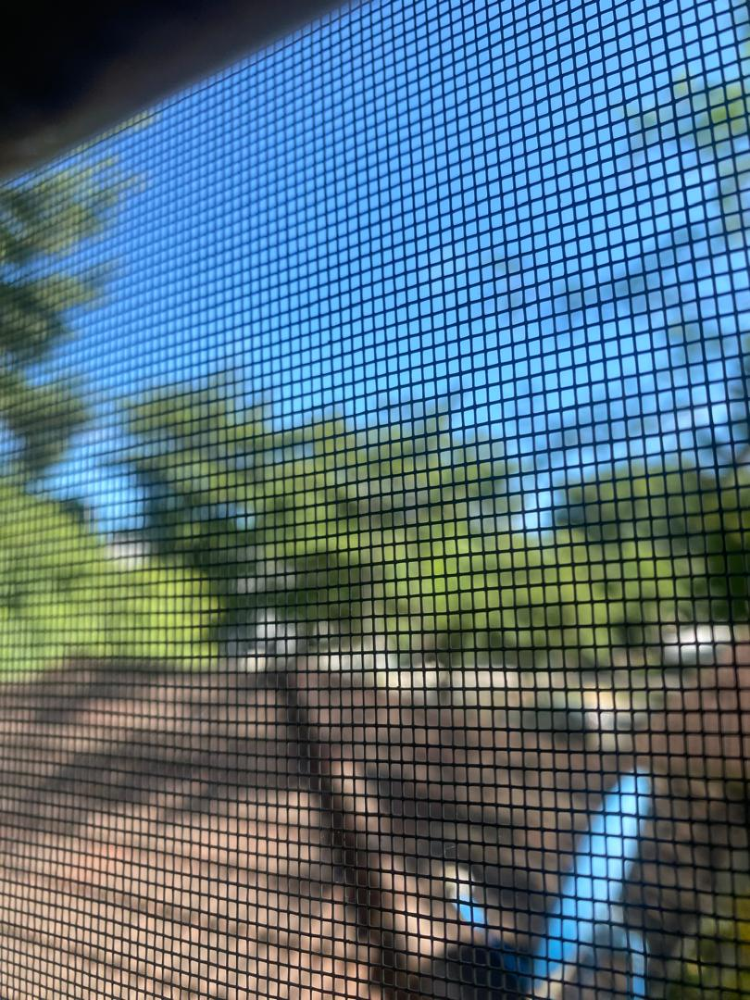
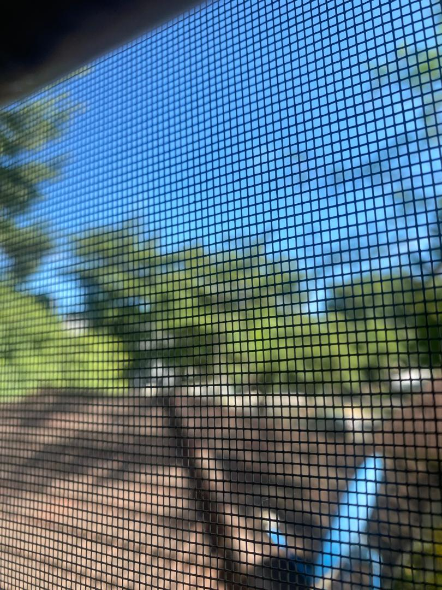
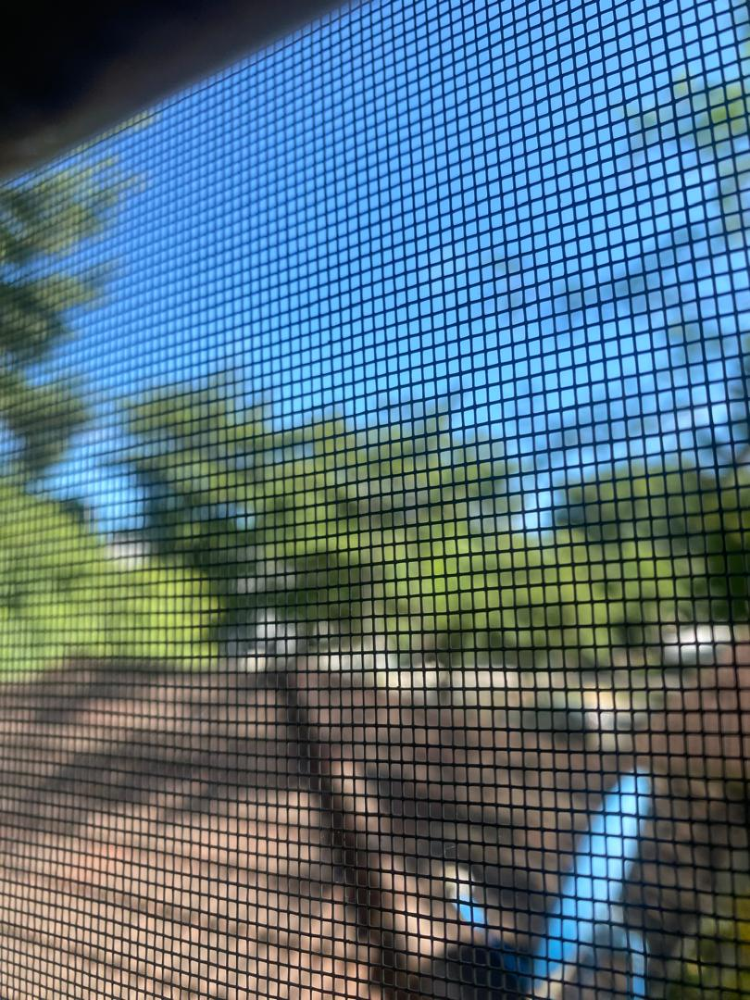

STATIC
craft interviews with artists in nigeria...

The Limits of Control with Tobe Otuogbodor
O.O.
Did you have an art practice as a child?
T.O.
I don't think a regular one. I did saxophone for maybe a few months and then the recorder, which was pretty standard Nigerian primary school stuff, but I was never very good at either. Saxophone, I wanted to be good at, so I tried, and I sort of learned the national anthem for a bit, but then I forgot. I'm interested in music, but I was never serious about being a musician.
I drew a comic when I was in primary school, which gave me lots of satisfaction. It was either a long graphic novel or several issues, but I completed the story, and it took days. I kept coming back to it, and I tried to make the characters all look different. I drew it with biro on a ruled exercise book.
O.O.
Was it a school book?
T.O.
No, no. It might have been a jotter or something.
O.O.
Can you remember what the comic was about?
T.O.
There was violence in it. I think the main character’s girlfriend had been murdered, and he had to get revenge - something like that. I do remember that there was this movie or TV show I saw on Nigerian TV when I was small, and I always remember Ramsey Nouah as being in it, but I don't know if he was. But for a while, Ramsey Nouah was the only younger Nigerian actor I knew. Because in the 2000s, he was actually young, right? I know that now he still wants to play an NYSC corper, but, then, it was appropriate for him to be playing those sorts of characters! [Laughs.]
Anyway, the show was about a special unit of police officers who went after criminals. There was this one scene that stayed with me, where they parked their car and got out, and their boots were those boots that needed a key - you needed to put the key in to unlock and open. So they did that, and then they would keep their guns in the boot. And in my head, it just felt so tactile, and also sort of tactical and cool. And I don’t remember if it was the same TV show or movie, but there was also a flat that I saw in something.
My main character - I wanted him to have the feel of those guys. I don't think I wrote the boot thing in this comic, but I know that, in my head, his apartment looked exactly like one of the apartments I had seen. I don't know if I recreated it, even close to… But sorry, I’ve rambled on so long. No, I didn't have an art practice as a child.
O.O.
But that's exactly what that is! You just described an elaborate process that led to the production of a complete work.
You said you used an exercise book. Do you remember what you were drawing with?
T.O.
Oh, yeah, biro.
O.O.
Oh, Biro. Okay. You said so.
T.O.
Yeah. The whole thing was in... I really, I remember it being biro. Even now, to be honest, I prefer to draw in biro than in pencil.
O.O.
What color was the biro?
T.O.
Probably blue. I hadn't made my deal yet. That didn't come 'till the end of GS1.
O.O.
Can you describe - we can cut this from the interview - but can you describe what the deal was?
T.O.
…
O.O.
It's okay. We don't have to go there.
T.O. I can't use blue pens anymore, basically, as a result of the deal. I haven’t since then.
O.O.
What kinds of materials are most exciting to you at the moment? Is there something in particular you're interested in working with or incorporating into a new piece? Do you think about materials in that way?
T.O.
To be honest, not really... I’m very excited to have that sort of materiality with projects. Our Carmilla adaptation. But generally, no, because, you know, I work with writing and film.
I want to make a film with my digital camera. I saw this film that was shot on a Sony Ericsson [camera] last year. It's called Dry Leaf. It's a Georgian film. The country, not the American state. So if that counts as a material, then that.
O.O.
Can you talk about the themes of some of your current work?
T.O.
I don't know. Jesus, thinking about it, that's such a complicated question. I think that, like all artists - or maybe not all - I definitely am interested in “themes,” quote-unquote. But I also don't have an endpoint. I don’t know what thematic thing, ultimately, I’ll pursue. Yeah. It's hard to say. I'm sorry.
O.O.
No need to apologise.
T.O.
Okay, then I'm not sorry.
O.O.
What have been the limits that social conditions, broadly defined, have placed either on your practice or your imagination?
T.O.
I will say there is this Jim Jarmusch film that has Isaac de Bankole. It's called the Limits of Control. I enjoyed the film. It’s not perfect, but I enjoyed it. Strange film - he's a hitman who's going through Spain, just having a series of conversations with people who have names like the Surveyor, the Connector, the Damsel, that sort of thing. But that title always struck me as like, okay, that's going to be my theme, throughout all my work. The limits of control. And you just saying limits reminded me of that.
But in terms of the limits from social conditions, I'm not certain what that means.
O.O.
Can I say more about it?
T.O.
Please.
O.O.
Before I put the phrase ‘social conditions’ in the question, what I had was capitalism.
T.O.
Mmm! There’s this thing Nicko Jackson said - he’s a footballer. I think he’s on loan at Bayern from Chelsea right now.
O.O.
I know him well.
T.O.
Oh, you do?
O.O.
From my mum. [Laughs.]
T.O.
There’s this thing he once said on his Instagram story that I say now so much: 'We’re killing ourselves for Africa.' It is very difficult, just in practical terms. To make a film, you need money. It's hard to have access to that. There's not a lot of funding in Nigeria, and it’s sort of humiliating filling all those forms for funding from abroad. And it's hard to even make things on the cheap in Nigeria because you can't film outside anywhere without being harassed and asked to pay money, things like that. There are these very practical limitations.
This is a very poor country right now. You’re spending all of your time working and not making enough money from that, so how can you even fund this stuff? And then you can't even do it cheap. And then you get discouraged because there isn't a market to sell anything interesting.
O.O.
You talked about the practical difficulties that are caused by social conditions in the place where we live. But I'm wondering about the imagination part of that question. Do you notice effects on your imagination from those same social conditions?
T.O.
Hmm. I guess when you hear effects, when you talk about the social conditions, which are negative, you expect... The colour of that question is, you know, what are the negative effects? But, honestly, I don't think so. I mean, I'm sure my environment must play a substantial role in my imagination, but I can’t pinpoint exactly what.
In terms of reckoning with social conditions, no. I think it might impact my effectiveness in that I'm tired a lot and not able to work. But in terms of my imagination, you know, I... I think as time goes on, the older I get, I feel myself come up with more interesting ideas than I did when I was younger.
This interview was conducted on February 25th, 2026 & edited by Oritsemughone Ogbemi the next day.
 
